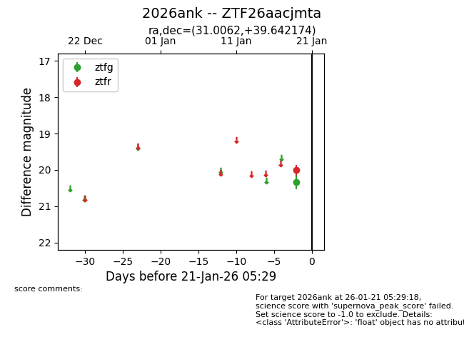
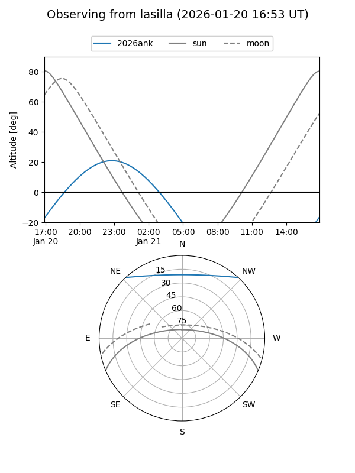
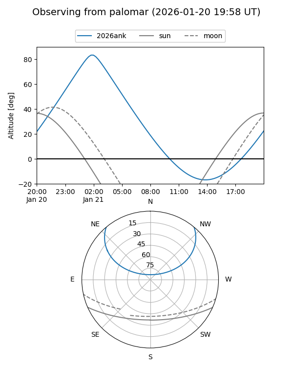

2026ank
Target 2026ank at 2026-01-19 05:30
Aliases and brokers:
FINK: link
Lasair: link
ALeRCE: link
TNS: link
YSE: link
alt names
ZTF26aacjmta (ztf,fink_ztf)
2026ank (tns,yse)
Coordinates:
equatorial (ra, dec) = 31.0062,+39.64217
equatorial (HMS+DMS) = 02:04:01.48,+39:38:31.83
galactic (l, b) = (137.8301,-21.12043)
Flags:
Photometry:
last ztfg=20.33
1 ztfg detections
Lightcurve

Visibility


Additional plots